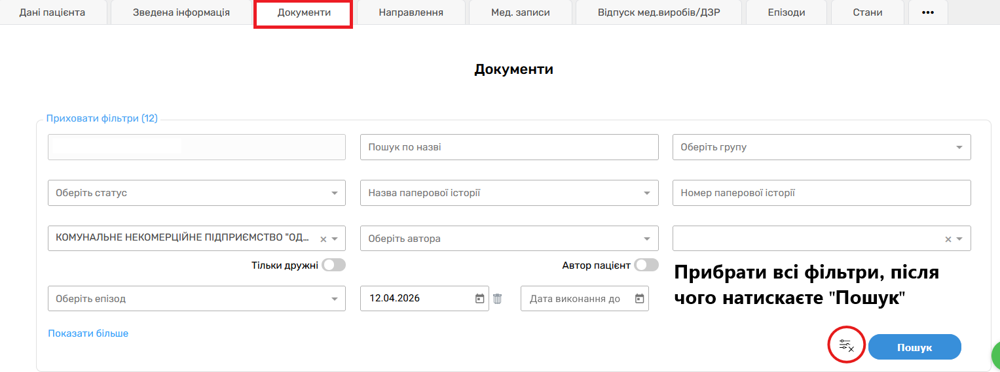
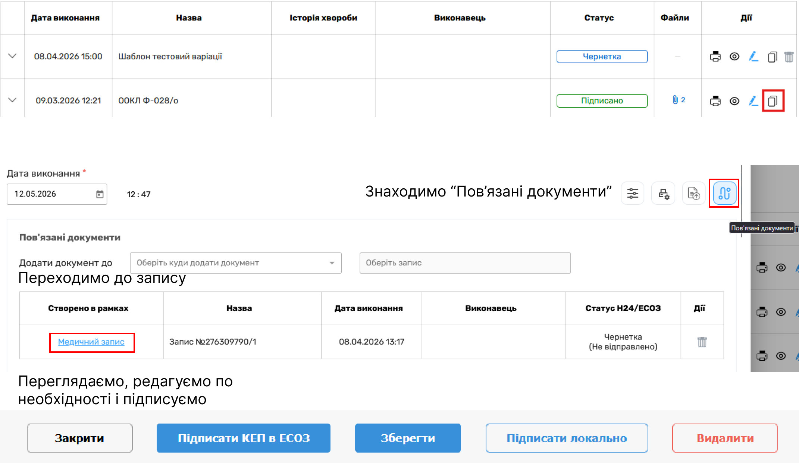
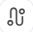

Для того, щоб створити повторний візит пацієнта, проводяться наступні кроки.
Для забезпечення простішого та швидшого проведення повторного прийому , даний функціонал описаний у цій статі.

Минулі епізоди лікування

Результати пошуку записів
Покрокова інструкція
- 1 Переходимо через "Календар" на пацієнта, якого ми хочемо провести повторно (Також можна через вкладку "Пацієнти").
- 2 Після цього заходимо до вкладки "Документи" , прибираємо дату в фільтрах (фото №1)
-
3
Копіюємо запис з піктограмою
 , після чого з'явиться копія документу прийому, в якій ви будете працювати далі.
, після чого з'явиться копія документу прийому, в якій ви будете працювати далі.
-
4
Після чого натискаємо на кнопку

, обираєете необхідний запис, дивлячись на дату. - 5 Далі ви можете відредагувати та зберегти копію прийому та підписати з КЕП.
-
6
Якщо ви хочете використати минулий прописаний план лікування, то зверніть увагу на дані поля, вони дозволяють обрати план на основі минулих візитів

Важливо
Якщо випадково скопіювали не той запис чи помилково, їх можна видалити на сторніці картки пацієнта кнопкою 
Підказка
Зверніть увагу, що в середині картки пацієнта можна знайти й інші даігностичні звіти, які можуть знадобитися для поставноки анамнезу. Подробиці: Тут